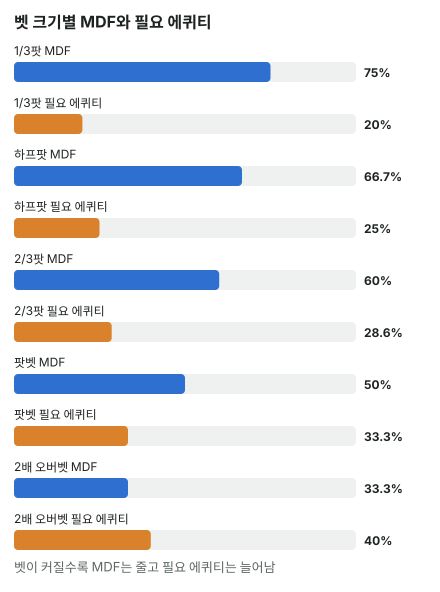

안녕하세요. A01에서는 벳하는 쪽에 앉아 알파(블러프가 본전이 되려면 상대가 폴드해야 하는 비율)를 구했죠.
오늘은 다시 벳을 맞는 쪽으로 돌아와요. 상대가 손에 뭘 들었든 벳만 하면 돈을 버는 상황을 막으려면, 우리는 들고 있을 수 있는 핸드 중 몇 %를 지켜야 할까요? 이 숫자가 MDF예요.
이 글에서 배울 것
- MDF 공식 팟 ÷ (팟 + 벳)이 왜 "1 − 알파"인지, 상대 블러프를 반복해 보며 직접 따져 보기
- MDF는 핸드 하나가 아니라 레인지 전체에 대한 숫자라는 것, 그리고 필요 에퀴티와 무엇이 다른지
- 지킬 핸드를 강한 순서로 위에서부터 채우는 법
오늘의 장면
A01과 같은 리버예요. 보드는 K♠ 9♠ 4♥ 7♦ 2♣, 팟 12BB.
이번엔 Hero가 BB에 앉아 리버에 체크했고, 상대(BTN)가 6BB(하프팟)를 걸었어요. Hero는 9♥8♥, 9 페어예요.
Hero가 궁금한 건 둘이에요. "이 9 페어로 콜할까?" 그리고 그보다 앞서 "이 상황에서 나는 원래 얼마나 콜해야 하는 사람인가?" 오늘은 두 번째 질문부터 풀어요.
오늘도 A01처럼 가정해요. 상대 블러프는 콜을 받으면 항상 지고, Hero는 콜 아니면 폴드만 한다.
1단계. MDF란?
먼저 레인지
레인지 = 이 상황에서 우리가 들고 있을 수 있는 핸드 전체예요. Hero가 실제로 든 건 9♥8♥ 하나지만, 상대 눈에는 "이 사람은 리버에 체크하는 이런저런 핸드 중 하나를 들고 있다"로 보여요.
리버 체크까지 온 Hero 레인지에는 K 페어도, 9 페어도, 7 페어도, A 하이도, 빗나간 스페이드 드로우도 섞여 있을 수 있어요.
MDF의 뜻
MDF(최소 방어 빈도) = 상대가 아무 핸드로나 블러프해서 이득을 보지 못하게 하려면, 우리 레인지 중 콜(또는 레이즈)로 지켜야 하는 최소 비율이에요.
비유하면 편의점 야간 근무예요. 계산대를 너무 자주 비우면(폴드) 아무나 들어와 물건을 들고 가요(블러프). 최소한 이만큼은 자리를 지켜야 "들고 가 봤자 손해"가 되죠.
이게 무슨 뜻이냐면
MDF는 "9♥8♥로 콜하라"는 숫자가 아니에요. "레인지 전체를 줄 세웠을 때 이만큼은 콜하는 쪽에 둬라"는 숫자예요. 핸드 하나의 판단은 그다음 일이에요.
2단계. 상대 자리에서 본 우리의 폴드
A01의 본전 계산을 자리만 바꿔 보면
A01에서 Hero가 하프팟 블러프를 할 때, 상대가 3번 중 1번 접으면 딱 본전이었죠. 오늘은 그 상대 자리에 Hero가 앉은 거예요. 그러니 Hero가 3번 중 1번보다 자주 접으면 상대 블러프가 남고, 덜 접으면 손해예요.
너무 많이 접으면 무슨 일이 생기나
Hero 레인지가 이 벳에 절반을 접는다면:
상대 블러프 EV = 0.5 × 12 − 0.5 × 6 = 6 − 3 = +3BB
여기서 중요한 건 이 +3BB가 상대 핸드와 상관없다는 거예요. 7-2든 빗나간 드로우든, 상대는 이 리버에서 벳만 하면 한 번에 3BB씩 벌어요. 상대 입장에선 "어떤 핸드로 블러프할까"를 고민할 필요조차 없어요.
이게 무슨 뜻이냐면
상대 블러프가 본전이 되는 선은 Hero 폴드 3번 중 1번, 즉 Hero가 3번 중 2번을 지킬 때예요. 이 "3번 중 2번 = 66.7%"가 하프팟의 MDF예요. MDF를 넘게 지키면 상대의 아무 두 장 블러프는 손해가 돼요.
3단계. 공식은 "1 − 알파"
우리 폴드 = 상대 블러프의 성공
상대 블러프가 성공하는 건 우리가 폴드할 때예요. 그러니 상대가 본전이 되려면 우리가 폴드해야 하는 비율 = 상대의 알파죠(A01).
우리는 그 알파보다 덜 접어야 하고, 나머지는 지켜야 해요. 그래서:
MDF = 1 − 알파 = 팟 ÷ (팟 + 벳) (팟은 상대가 벳하기 전 팟)
오늘 숫자로
- 상대 알파 = 6(벳) ÷ (12(벳 전 팟) + 6(벳)) = 33.3%
- Hero MDF = 12(벳 전 팟) ÷ (12 + 6) = 12 ÷ 18 = 66.7%
알파는 분자에 벳, MDF는 분자에 팟이 들어가요. 분모는 둘 다 팟 + 벳으로 같아요. 그래서 둘을 더하면 늘 전체가 돼요(이 대칭은 다음 글 A03에서 더 깊이 봐요).
팟을 1로 놓으면
하프팟이면 팟 1에 벳 0.5. MDF = 1 ÷ (1 + 0.5) = 66.7%. 팟이 얼마든 하프팟이면 3분의 2를 지켜야 해요.
4단계. 벳 크기별 MDF (팟 12BB 기준)
A01 표의 알파를 전체에서 빼면 MDF예요. 이번엔 B15에서 본 필요 에퀴티와 나란히 놓아 볼게요.
| 벳 크기 | 벳 | 우리 MDF (레인지에서 지킬 비율) | 필요 에퀴티 (핸드 하나의 콜 본전) |
|---|---|---|---|
| 1/3팟 | 4BB | 75% | 20% |
| 하프팟 | 6BB | 66.7% | 25% |
| 2/3팟 | 8BB | 60% | 28.6% |
| 팟벳 | 12BB | 50% | 33.3% |
| 2배 오버벳 | 24BB | 33.3% | 40% |

같은 하프팟인데 66.7%와 25%, 두 숫자가 전혀 달라요. 벳이 커지면 MDF는 내려가고 필요 에퀴티는 올라가요. 왜 이렇게 다른지는 아래 '왜 그럴까'에서 풀어요.
작은 벳일수록 많이 지켜야 하는 이유
작은 벳은 상대에게 싼 블러프예요. 1/3팟이면 4BB를 걸고 12BB를 노리니까, 4번 중 1번만 성공해도 본전이죠. 그만큼 우리는 많이(4번 중 3번) 지켜야 해요.
반대로 2배 오버벳은 상대가 24BB나 걸어야 해서 블러프가 비싸요. 그래서 우리는 3번 중 1번만 지켜도 상대 블러프가 남지 않아요. 작은 벳을 실제 핸드로 맞는 장면은 A06에서 다뤄요.
5단계. 지킬 핸드는 위에서부터 채워요
MDF 66.7%를 지킨다는 건 레인지를 강한 순서로 줄 세우고, 위에서 3분의 2까지를 콜 쪽에 둔다는 뜻이에요.
오늘 보드 K♠ 9♠ 4♥ 7♦ 2♣에서 Hero 레인지를 줄 세우면 이런 순서가 될 수 있어요.
- 맨 위: 셋·투페어(99·77·44, K9·97 같은 것)
- K 페어(키커 높은 쪽부터)
- 9 페어 → 7 페어·4 페어
- A 하이(빗나간 A♠x♠ 드로우도 여기)
- 맨 아래: 빗나간 낮은 드로우(6♠3♠ 같은 것)
아래쪽부터 접고, 위쪽은 지키는 거예요.
그래서 9♥8♥는?
9♥8♥는 이 줄의 가운데쯤이에요. MDF로 보면 "위쪽 3분의 2 안에 들 수 있는 핸드"라 콜 후보예요.
하지만 9♥8♥ 한 장이 실제로 콜해서 남으려면 따로 조건이 하나 있어요. 9♥8♥는 상대 밸류(K 페어 이상)에는 지고 블러프에만 이기니까, 필요 에퀴티 25%, 즉 상대 벳 4번 중 1번 이상이 블러프여야 콜이 남아요. 상대 벳 속 블러프를 실제로 세어서 이 조건을 확인하는 계산은 A04에서 배워요.
이게 무슨 뜻이냐면
MDF는 "몇 개를 지킬까"를 정하고, 핸드의 세기는 "어느 것을 지킬까"를, 필요 에퀴티는 "이 핸드가 지켜서 남나"를 정해요. 세 숫자가 하는 일이 달라요.
왜 그럴까: MDF는 상대에게 "아무 두 장 블러프"라는 공짜 돈을 안 주는 숫자예요
상대가 노리는 건 우리의 폴드 습관
2단계에서 Hero가 절반을 접을 때, 상대 블러프는 핸드와 상관없이 +3BB였어요. 7 2든 6 5든 상관없어요. 이 상대는 이 리버에서 벳만 계속하면 돈을 벌죠.
MDF를 지키면 이 공짜 돈이 사라져요. 상대가 블러프로 이득을 보려면 이제 "Hero가 이번엔 약하다"는 진짜 이유가 있어야 해요.
상대 손을 몰라도 쓸 수 있는 숫자
MDF는 상대가 무엇을 들었는지 몰라도 벳 크기만 보고 정해져요. 그래서 상대 정보가 없을 때 "나는 기본적으로 이만큼은 지킨다"는 출발점이 돼요.
반대로 상대가 블러프를 거의 안 하는 사람이라면, 이 출발점에서 덜 지키는 쪽으로 옮겨 가요. 이 조정은 A07에서 다뤄요.
필요 에퀴티와는 다른 질문
같은 하프팟인데, 필요 에퀴티는 25%, MDF는 66.7%예요. 두 숫자는 묻는 게 달라요.
- 필요 에퀴티 25%: "이 핸드가 콜해서 본전이 되려면 몇 번 이겨야 하나"
- MDF 66.7%: "내 레인지에서 몇 %를 콜해야 상대 블러프가 남지 않나"
하나는 핸드 하나의 승률, 하나는 레인지에서 지키는 비율이에요. 비교할 대상이 다르니 숫자도 다른 거예요.
자주 하는 실수
실수 1. MDF를 내 핸드 승률 기준으로 쓰기 "하프팟 MDF가 66.7%니까 내 핸드가 66.7%는 이겨야 콜"이라고 생각하는 실수예요. 오늘 하프팟 콜에 필요한 승률은 25%였어요. MDF는 핸드 하나가 아니라 레인지에서 콜하는 비율이에요. 핸드 하나는 "필요 에퀴티 vs 내 에퀴티"로 봐요.
실수 2. 작은 벳에 쉽게 접기 "작게 걸었으니 별것 아니겠지" 하고 접으면 오히려 상대가 가장 원하는 일이에요. 1/3팟이면 MDF는 75%, 하프팟보다 더 많이 지켜야 해요. 작은 벳을 맞으면 "이건 싼 블러프가 될 수 있다"부터 떠올려요.
실수 3. 지킬 비율을 아무 핸드로나 채우기 "3분의 2를 지켜야 하니까 이번엔 빗나간 드로우로도 콜" 같은 판단이에요. MDF는 레인지 위쪽부터 채우는 숫자예요. 오늘 장면이라면 빗나간 드로우는 줄의 맨 아래라, K 페어·9 페어를 두고 그걸로 콜하는 건 순서가 거꾸로예요.
"그럼 MDF만큼은 무조건 콜해야 해요?"
좋은 질문이에요. 아니에요. MDF는 상대가 블러프를 섞을 수 있다고 볼 때의 기준선이에요.
상대가 이 벳에 블러프를 거의 섞지 않는다면, 위쪽 핸드로 콜해도 대부분 상대 밸류에 질 뿐이라 기준보다 덜 지키는 게 맞을 수 있어요. 반대로 블러프를 많이 섞는 상대면 더 지켜도 돼요. MDF는 정보가 없을 때의 출발점이고, 상대 성향을 알면 거기서 옮겨 가요.
선생님의 한마디
벳을 맞으면 이 순서로 생각해요.
- 벳 크기로 MDF부터: 하프팟 66.7%, 팟벳 50%, 1/3팟 75%
- 내 레인지를 강한 순서로 떠올리고, 내 핸드가 위쪽 MDF 안에 드는지 보기
- 마지막으로 이 상대가 블러프를 섞는지 보고 기준선에서 옮기기
연습 문제
학습툴에는 MDF를 직접 넣는 칸이 없어요. 홀덤학습 팟 오즈 퀴즈 Lv.5(블러프 본전) 해설 끝의 "상대의 최소 방어율"이 MDF예요.
문제 1. 턴 팟 30BB에 상대가 10BB를 걸었어요. ① 우리 MDF는? ② 이 상대는 이런 턴 작은 벳을 밸류로만 하는 사람으로 알려져 있어요. 우리 레인지 위쪽 4분의 1은 상대 밸류도 이기는 핸드, 그 아래는 상대 밸류에 지는 블러프캐처예요. MDF만큼 다 지켜야 할까요?
정답 보기
① MDF = 30 ÷ (30 + 10) = 30 ÷ 40 = 75%. 1/3팟이라 원래는 4번 중 3번을 지켜야 해요. ② 아니에요. MDF는 상대가 블러프를 섞을 수 있다고 볼 때의 출발점이에요. 이 상대 벳에 블러프가 거의 없다면, 블러프캐처로 콜해도 이길 상대가 없어요. 상대 밸류도 이기는 위쪽 4분의 1만 지키고, 블러프캐처는 접는 쪽으로 옮겨 가요.
문제 2. 리버 팟 16BB에 상대가 8BB를 걸었어요. 리버까지 온 우리 레인지를 강한 순서로 줄 세우면, 위에서 절반이 페어 이상, 그다음 4분의 1이 A 하이, 맨 아래 4분의 1이 빗나간 드로우예요. MDF만큼 지키려면 어느 핸드까지 콜해야 할까요?
정답 보기
MDF = 16 ÷ (16 + 8) = 66.7%, 레인지의 3분의 2예요. 페어 이상(2분의 1)을 다 지켜도 2/3 − 1/2 = 1/6만큼 모자라요. 그래서 A 하이 묶음의 일부까지 콜해야 해요. A 하이 묶음(4분의 1) 중에서는 (1/6) ÷ (1/4) = 2/3, 즉 A 하이의 3분의 2를 지키고 빗나간 드로우는 다 접어요. A 하이 안에서도 키커가 높은 쪽부터 남겨요.
핵심 정리
- MDF = 팟 ÷ (팟 + 벳) = 1 − 알파. 상대가 아무 핸드로나 블러프해서 이득을 못 보게 하는 최소 방어 비율이에요
- 하프팟 66.7%, 팟벳 50%, 1/3팟 75%. 벳이 작을수록 더 많이 지켜야 해요
- MDF는 레인지 전체의 비율이에요. 핸드 하나의 콜은 필요 에퀴티(하프팟 25%)로 따로 봐요
- 지킬 핸드는 강한 순서로 위에서부터 채워요
- MDF는 정보가 없을 때의 출발점. 상대가 블러프를 덜 섞으면 덜, 더 섞으면 더 지켜요
정리하며
오늘은 리버 하프팟 벳을 맞는 쪽에서, 우리가 얼마나 지켜야 하는지를 따졌어요.
Hero가 절반을 접으면 상대 블러프가 +3BB, 3번 중 2번을 지키면 딱 본전이 되는 걸 직접 세어 보고, 그 기준이 MDF 팟 ÷ (팟 + 벳)이라는 걸 확인했죠. MDF는 핸드 하나의 승률이 아니라 레인지에서 지키는 비율이라, 위에서부터 채운다는 것도 봤어요.
실전에서는 벳을 맞는 순간 "이 크기면 몇 %를 지켜야 하지? 내 핸드는 그 안에 드나?"를 먼저 물으세요.
다음 글 A03에서는 오늘의 MDF와 A01의 알파를 같은 벳 하나에 나란히 놓아요. 두 숫자가 왜 늘 합쳐서 전체가 되는지, 벳 크기를 고를 때 그게 어떻게 쓰이는지를 다뤄요.
AI 작성 · 숫자는 계산 검증 · 블러프는 콜을 받으면 항상 진다고 가정(콜 아니면 폴드)